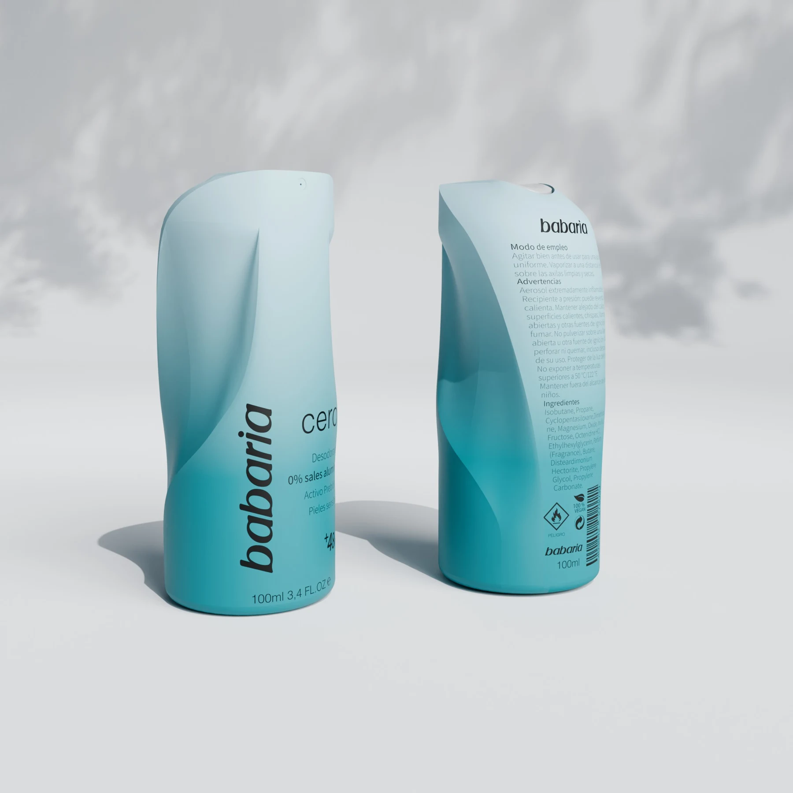
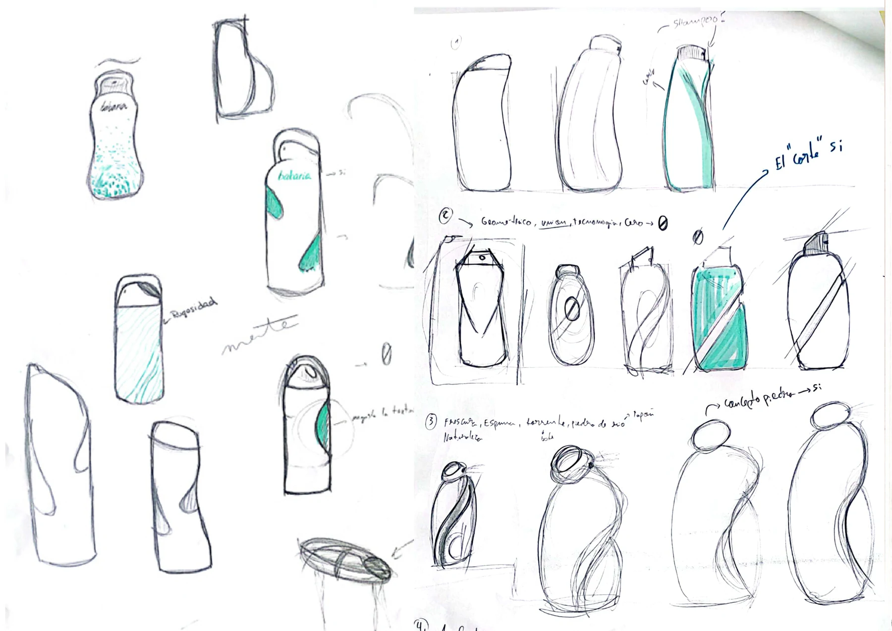
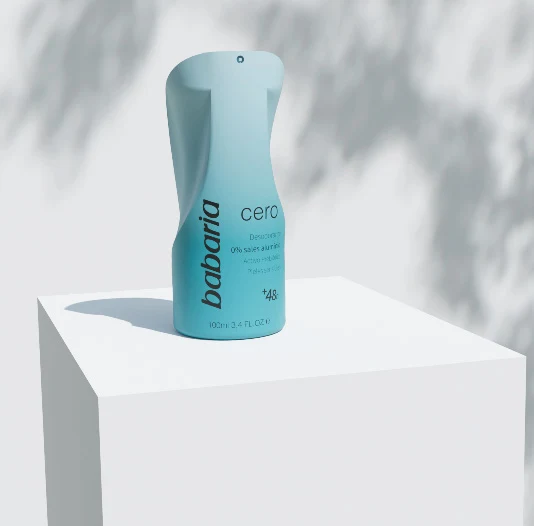
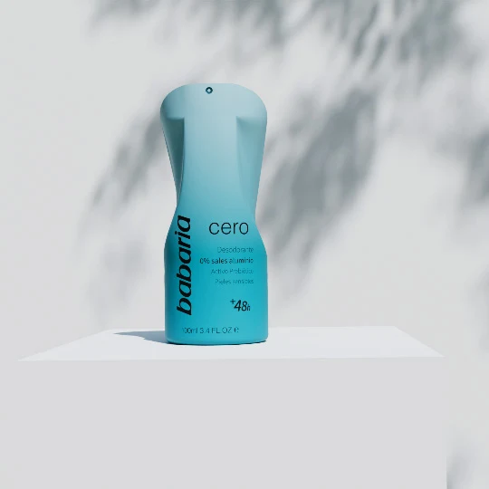
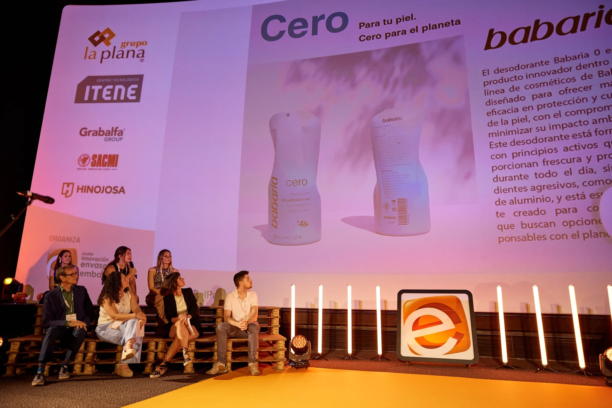

Diseño de producto / 2025
Babaria
Un envase de PET reciclado para repensar el desodorante. Proyecto en equipo para el reto de Babaria en los Premios Nacionales de Diseño y Sostenibilidad de Envase y Embalaje, reconocido con el tercer puesto a nivel nacional.









